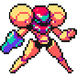
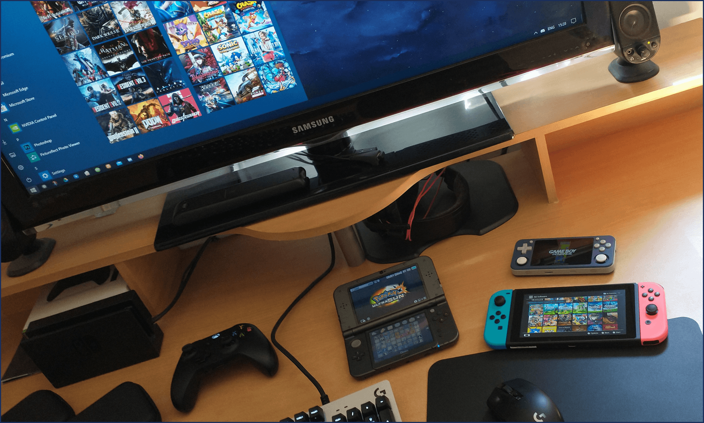

Dio's Collection Tracker
A comprehensive point of reference to the games and systems available to me.
Remakes and ports are listed under the release date of the original game for play order convenience.
Full DLC and expansions are to be assumed, even if they are standalone releases.
| Series | Release | Game | Platform |
|---|---|---|---|
| 1989 | Blazing Lazers | NEC TurboGrafx16 | |
| 1989 | Zero Wing | Sega Genesis | |
| 1990 | Shadow of the Ninja | Nintendo NES | |
| 1991 | Metal Slader Glory | Nintendo NES | |
| 1991 | Metal Storm | Nintendo NES | |
| 1991 | Popful Mail | Sega CD | |
| 1992 | Axelay | Nintendo SNES | |
| 1992 | Recca | Nintendo NES | |
| 1993 | Hyper Duel | Arcade | |
| 1993 | In the Hunt | Arcade | |
| 1994 | Armored Warriors | Arcade | |
| 1995 | Alien Soldier | Sega Genesis | |
| 1995 | Comix Zone | Sega Genesis | |
| 1995 | Metal Warriors | Nintendo SNES | |
| 1995 | Rapid Reload | Sony PS1 | |
| 1995 | Secret of Evermore | Nintendo SNES | |
| 1996 | Chaos Seed | Nintendo SNES | |
| 1996 | Energy Breaker | Nintendo SNES | |
| 1996 | Red Earth | Arcade | |
| 1997 | Battle Circuit | Arcade | |
| 1997 | Einhander | Sony PS1 | |
| 1998 | Armed Police Batrider | Arcade | |
| 1998 | Thousand Arms | Sony PS1 | |
| 1999 | ChuChu Rocket! | Nintendo GBA | |
| 1999 | Little Magic | Nintendo GBC | |
| 1999 | Omega Boost | Sony PS1 | |
| 1999 | Planescape: Torment | Microsoft Windows | |
| 2005 | Drill Dozer | Nintendo GBA | |
| 2006 | Scurge Hive | Nintendo GBA | |
| 2006 | Titan Quest | Microsoft Windows | |
| 2007 | Odin Sphere | Sony PSV | |
| 2008 | Sins of a Solar Empire: Trinity | Microsoft Windows | |
| 2008 | Soma Bringer | Nintendo DS | |
| 2009 | Blood of Bahamut | Nintendo DS | |
| 2009 | Muramasa Rebirth | Sony PSV | |
| 2010 | Infinite Space | Nintendo DS | |
| 2010 | Pier Solar & the Great Architects | Sega Genesis | |
| 2010 | Vanquish | Microsoft Windows | |
| 2011 | Bastion | Sony PSV | |
| 2011 | Ghost Trick: Phantom Detective | Nintendo DS | |
| 2011 | Grand Knights History | Sony PSP | |
| 2011 | Jamestown | Nintendo Switch | |
| 2011 | L.A. Noire | Microsoft Windows | |
| 2011 | Solatorobo: Red the Hunter | Nintendo DS | |
| 2012 | Blade & Soul | Microsoft Windows | |
| 2012 | Cave Story | Nintendo 3DS | |
| 2012 | Dragon's Dogma Dark Arisen | Nintendo Switch | |
| 2012 | Fez | Nintendo Switch | |
| 2012 | Journey | Microsoft Windows | |
| 2012 | Kingdoms of Amalur: Reckoning | Microsoft Windows | |
| 2012 | Mark of the Ninja | Microsoft Windows | |
| 2012 | Under Night In-Birth | Sony PSV | |
| 2013 | Dragon's Crown | Sony PSV | |
| 2013 | Papers Please | Sony PSV | |
| 2014 | Transistor | Nintendo Switch | |
| 2015 | CrossCode | Nintendo Switch | |
| 2015 | Heroes of the Storm | Microsoft Windows | |
| 2015 | Invisible Inc | Nintendo Switch | |
| 2016 | Hyper Light Drifter | Nintendo Switch | |
| 2016 | Owlboy | Nintendo Switch | |
| 2016 | Shadow Tactics: Blades of the Shogun | Microsoft Windows | |
| 2016 | Stella Glow | Nintendo 3DS | |
| 2017 | Battle Chasers Nightwar | Nintendo Switch | |
| 2017 | Cuphead | Nintendo Switch | |
| 2017 | Dead Cells | Nintendo Switch | |
| 2017 | Fight'N Rage | Nintendo Switch | |
| 2018 | Celeste | Nintendo Switch | |
| 2018 | Chasm | Nintendo Switch | |
| 2018 | Dandara | Nintendo Switch | |
| 2018 | Iconoclasts | Nintendo Switch | |
| 2018 | Into The Breach | Nintendo Switch | |
| 2018 | Moonlighter | Nintendo Switch | |
| 2018 | Radiant Historia: Perfect Chronology | Nintendo 3DS | |
| 2018 | The Messenger | Nintendo Switch | |
| 2018 | Timespinner | Nintendo Switch | |
| 2019 | Astral Chain | Nintendo Switch | |
| 2019 | Blasphemous | Nintendo Switch | |
| 2019 | Daemon X Machina | Microsoft Windows | |
| 2019 | Devil Engine | Nintendo Switch | |
| 2019 | Katana Zero | Nintendo Switch | |
| 2019 | Micro Mages | Nintendo NES | |
| 2019 | Monster Sanctuary | Nintendo Switch | |
| 2019 | Sparklite | Nintendo Switch | |
| 2019 | WarGroove | Nintendo Switch | |
| 2019 | Xeno Crisis | Sega Genesis | |
| 2020 | Cyber Shadow | Nintendo Switch | |
| 2020 | Ghostrunner | Microsoft Windows | |
| 2020 | Hades | Nintendo Switch | |
| 2020 | Helltaker | Microsoft Windows | |
| 2020 | Indivisible | Nintendo Switch | |
| 2020 | One Step From Eden | Nintendo Switch | |
| 2020 | Panzer Paladin | Nintendo Switch | |
| 2020 | ScourgeBringer | Nintendo Switch | |
| 2021 | Rising Hell | Nintendo Switch | |
| 2021 | Scarlet Nexus | Microsoft Windows | |
| 7th Dragon | 2009 | 7th Dragon | Nintendo DS |
| 7th Dragon | 2011 | 7th Dragon 2020 | Sony PSP |
| 7th Dragon | 2013 | 7th Dragon 2020-II | Sony PSP |
| 7th Dragon | 2016 | 7th Dragon III Code: VDF | Nintendo 3DS |
| Ace Attorney | 2001 | Phoenix Wright: Ace Attorney Trilogy | Nintendo 3DS |
| Ace Attorney | 2007 | Apollo Justice: Ace Attorney | Nintendo 3DS |
| Ace Attorney | 2009 | Ace Attorney Investigations: Miles Edgeworth | Nintendo DS |
| Ace Attorney | 2011 | Ace Attorney Investigations 2: Prosecutor's Path | Nintendo DS |
| Ace Attorney | 2013 | Phoenix Wright: Ace Attorney - Dual Destinies | Nintendo 3DS |
| Ace Attorney | 2016 | Phoenix Wright: Ace Attorney - Spirit of Justice | Nintendo 3DS |
| Ace Attorney | 2017 | The Great Ace Attorney Chronicles | Nintendo Switch |
| Ace Combat | 1999 | Ace Combat 3: Electrosphere | Sony PS1 |
| Ace Combat | 2019 | Ace Combat 7: Skies Unknown | Microsoft Windows |
| Advance Wars | 2001 | Advance Wars | Nintendo GBA |
| Advance Wars | 2003 | Advance Wars 2: Black Hole Rising | Nintendo GBA |
| Advance Wars | 2005 | Advance Wars: Dual Strike | Nintendo DS |
| Advance Wars | 2008 | Advance Wars: Days of Ruin | Nintendo DS |
| Age of Empires | 1997 | Age of Empires | Microsoft Windows |
| Age of Empires | 1999 | Age of Empires II | Microsoft Windows |
| Aleste | 1990 | MUSHA | Sega Genesis |
| Aleste | 1991 | GG Aleste | Sega Game Gear |
| Aleste | 1992 | Robo Aleste | Sega CD |
| Aleste | 1992 | Super Aleste | Nintendo SNES |
| Aleste | 1993 | GG Aleste II | Sega Game Gear |
| Alien | 1994 | Alien vs Predator | Arcade |
| Alien | 1999 | Aliens vs Predator | Microsoft Windows |
| Alien | 2001 | Aliens vs Predator 2 | Microsoft Windows |
| Alien | 2011 | Aliens Infestation | Nintendo DS |
| Alien | 2014 | Alien: Isolation | Microsoft Windows |
| Assassin's Creed Spin-Off | 2015 | Assassin's Creed Chronicles Trilogy | Microsoft Windows |
| Assassin's Creed | 2007 | Assassin's Creed | Microsoft Windows |
| Assassin's Creed | 2009 | Assassin's Creed II | Microsoft Windows |
| Assassin's Creed | 2010 | Assassin's Creed: Brotherhood | Microsoft Windows |
| Assassin's Creed | 2011 | Assassin's Creed: Revelations | Microsoft Windows |
| Assassin's Creed | 2012 | Assassin's Creed III | Microsoft Windows |
| Assassin's Creed | 2013 | Assassin's Creed IV: Black Flag | Microsoft Windows |
| Assassin's Creed | 2014 | Assassin's Creed Rogue | Microsoft Windows |
| Assassin's Creed | 2014 | Assassin's Creed Unity | Microsoft Windows |
| Assassin's Creed | 2015 | Assassin's Creed Syndicate | Microsoft Windows |
| Assassin's Creed | 2017 | Assassin's Creed Origins | Microsoft Windows |
| Assassin's Creed | 2018 | Assassin's Creed Odyssey | Microsoft Windows |
| Assassin's Creed | 2020 | Assassin's Creed Valhalla | Microsoft Windows |
| Assault Suits | 1992 | Cybernator | Nintendo SNES |
| Atelier | 2019 | Atelier Ryza: Ever Darkness & the Secret Hideout | Microsoft Windows |
| Atelier | 2021 | Atelier Ryza 2: Lost Legends & the Secret Fairy | Microsoft Windows |
| Axiom Verge | 2015 | Axiom Verge | Nintendo Switch |
| Banner Saga | 2014 | The Banner Saga Trilogy | Nintendo Switch |
| Batman | 2009 | Batman: Arkham Asylum | Microsoft Windows |
| Batman | 2011 | Batman: Arkham City | Microsoft Windows |
| Batman | 2013 | Batman: Arkham Origins | Microsoft Windows |
| Batman | 2015 | Batman: Arkham Knight | Microsoft Windows |
| Battle Mania | 1991 | Battle Mania | Sega Genesis |
| Battle Mania | 1993 | Battle Mania 2 | Sega Genesis |
| Battlefield | 2018 | Battlefield V | Microsoft Windows |
| Battletoads | 1991 | Battletoads | Nintendo NES |
| Bayonetta | 2009 | Bayonetta | Nintendo Switch |
| Bayonetta | 2014 | Bayonetta 2 | Nintendo Switch |
| Bioshock | 2007 | Bioshock | Microsoft Windows |
| Bioshock | 2010 | Bioshock 2 | Microsoft Windows |
| Bioshock | 2013 | Bioshock Infinite | Microsoft Windows |
| Blaster Master | 2017 | Blaster Master Zero | Nintendo 3DS |
| Blaster Master | 2019 | Blaster Master Zero 2 | Nintendo Switch |
| BlazBlue | 2012 | BlazBlue: Chronophantasma Extend | Sony PSV |
| BlazBlue | 2016 | BlazBlue: Central Fiction | Microsoft Windows |
| Bloodstained | 2018 | Bloodstained: Curse Of The Moon | Nintendo 3DS |
| Bloodstained | 2019 | Bloodstained: Ritual of the Night | Microsoft Windows |
| Bloodstained | 2020 | Bloodstained Curse of the Moon 2 | Nintendo Switch |
| Boktai | 2003 | Boktai: The Sun Is in Your Hand | Nintendo GBA |
| Boktai | 2004 | Boktai 2: Solar Boy Django | Nintendo GBA |
| Boktai | 2005 | Boktai 3: Sabata's Counterattack | Nintendo GBA |
| Boktai | 2007 | Lunar Knights | Nintendo DS |
| Bomberman | 1993 | Bomberman | NEC TurboGrafx16 |
| Bomberman | 1994 | Super Bomberman 2 | Nintendo SNES |
| Borderlands | 2009 | Borderlands | Microsoft Windows |
| Borderlands | 2012 | Borderlands 2 | Microsoft Windows |
| Borderlands | 2014 | Borderlands: The Pre-Sequel | Microsoft Windows |
| Borderlands | 2019 | Borderlands 3 | Microsoft Windows |
| Bravely | 2014 | Bravely Default | Nintendo 3DS |
| Bravely | 2016 | Bravely Second: End Layer | Nintendo 3DS |
| Bravely | 2021 | Bravely Default II | Nintendo Switch |
| Breath of Fire | 1993 | Breath of Fire | Nintendo GBA |
| Breath of Fire | 1994 | Breath of Fire II | Nintendo GBA |
| Breath of Fire | 1997 | Breath of Fire III | Sony PS1 |
| Breath of Fire | 2000 | Breath of Fire IV | Sony PS1 |
| Burnout | 2008 | Burnout Paradise | Microsoft Windows |
| Castlevania | 1986 | Super Castlevania | Nintendo SNES |
| Castlevania | 1988 | Castlevania II: Simon's Quest | Nintendo NES |
| Castlevania | 1990 | Castlevania III: Dracula's Curse | Nintendo NES |
| Castlevania | 1993 | Castlevania: Bloodlines | Sega Genesis |
| Castlevania | 1993 | Castlevania: Rondo of Blood | NEC TurboGrafxCD |
| Castlevania | 1997 | Castlevania: Symphony of the Night | Sony PS1 |
| Castlevania | 2001 | Castlevania: Circle of the Moon | Nintendo GBA |
| Castlevania | 2002 | Castlevania: Harmony of Dissonance | Nintendo GBA |
| Castlevania | 2003 | Castlevania: Aria of Sorrow | Nintendo GBA |
| Castlevania | 2005 | Castlevania: Dawn of Sorrow | Nintendo DS |
| Castlevania | 2006 | Castlevania: Portrait of Ruin | Nintendo DS |
| Castlevania | 2008 | Castlevania: Order of Ecclesia | Nintendo DS |
| Chrono | 1995 | Chrono Trigger | Nintendo DS |
| Chrono | 1999 | Chrono Cross | Sony PS1 |
| Colony Wars | 1997 | Colony Wars | Sony PS1 |
| Colony Wars | 1998 | Colony Wars: Vengeance | Sony PS1 |
| Colony Wars | 2000 | Colony Wars: Red Sun | Sony PS1 |
| Command & Conquer | 2008 | Command & Conquer: Red Alert 3 | Microsoft Windows |
| Counter-Strike | 2012 | Counter Strike: Global Offensive | Microsoft Windows |
| Crash Bandicoot Spin-Off | 1999 | Crash Team Racing | Sony PS1 |
| Crash Bandicoot | 1996 | Crash Bandicoot N. Sane Trilogy | Microsoft Windows |
| Crash Bandicoot | 2002 | Crash Bandicoot: The Huge Adventure | Nintendo GBA |
| Crash Bandicoot | 2003 | Crash Bandicoot: N-Tranced | Nintendo GBA |
| Crash Bandicoot | 2020 | Crash Bandicoot 4: It's About Time | Microsoft Windows |
| Crysis | 2007 | Crysis | Microsoft Windows |
| Crysis | 2008 | Crysis Warhead | Microsoft Windows |
| Crysis | 2011 | Crysis 2 | Microsoft Windows |
| Crysis | 2013 | Crysis 3 | Microsoft Windows |
| Danganronpa | 2010 | Danganronpa: Trigger Happy Havoc | Sony PSV |
| Danganronpa | 2012 | Danganronpa 2: Goodbye Despair | Sony PSV |
| Danganronpa | 2017 | Danganronpa V3: Killing Harmony | Sony PSV |
| Darksiders | 2010 | Darksiders | Microsoft Windows |
| Darksiders | 2012 | Darksiders II | Microsoft Windows |
| Darksiders | 2018 | Darksiders III | Microsoft Windows |
| Darksiders | 2019 | Darksiders Genesis | Microsoft Windows |
| Darkstalkers | 1997 | Darkstalkers 3: Vampire Savior | Arcade |
| Dead or Alive | 1996 | Dead or Alive | Sony PS1 |
| Dead or Alive | 2013 | Dead or Alive 5 | Sony PSV |
| Dead or Alive | 2019 | Dead or Alive 6 | Microsoft Windows |
| Dead Space | 2008 | Dead Space | Microsoft Windows |
| Dead Space | 2011 | Dead Space 2 | Microsoft Windows |
| Dead Space | 2013 | Dead Space 3 | Microsoft Windows |
| Dept. Heaven | 2005 | Riviera: The Promised Land | Nintendo GBA |
| Dept. Heaven | 2006 | Yggdra Union: We'll Never Fight Alone | Nintendo GBA |
| Dept. Heaven | 2009 | Knights in the Nightmare | Sony PSP |
| Dept. Heaven | 2012 | Gungnir | Sony PSP |
| Desperados | 2020 | Desperados III | Microsoft Windows |
| Deus Ex | 2000 | Deus Ex | Microsoft Windows |
| Deus Ex | 2003 | Deus Ex: Invisible War | Microsoft Windows |
| Deus Ex | 2011 | Deus Ex: Human Revolution | Microsoft Windows |
| Deus Ex | 2016 | Deus Ex: Mankind Divided | Microsoft Windows |
| Devil May Cry | 2001 | Devil May Cry Collection | Microsoft Windows |
| Devil May Cry | 2008 | Devil May Cry 4 | Microsoft Windows |
| Devil May Cry | 2019 | Devil May Cry V | Microsoft Windows |
| Diablo | 1996 | Diablo | Sony PS1 |
| Diablo | 2000 | Diablo II | Nintendo Switch |
| Diablo | 2012 | Diablo III | Nintendo Switch |
| Digimon | 2015 | Digimon Story: Cyber Sleuth | Sony PSV |
| Digimon | 2017 | Digimon Story: Cyber Sleuth – Hacker's Memory | Sony PSV |
| Dino Crisis | 1999 | Dino Crisis | Sony PS1 |
| Dino Crisis | 2000 | Dino Crisis 2 | Sony PS1 |
| Disgaea Spin-Off | 2004 | La Pucelle Ragnarok | Sony PSP |
| Disgaea Spin-Off | 2004 | Phantom Brave | Sony PSP |
| Disgaea Spin-Off | 2005 | Phantom Kingdom | Sony PSP |
| Disgaea Spin-Off | 2008 | Prinny 1•2: Exploded and Reloaded | Nintendo Switch |
| Disgaea | 2003 | Disgaea | Nintendo Switch |
| Disgaea | 2006 | Disgaea 2: Dark Hero Days | Sony PSP |
| Disgaea | 2008 | Disgaea 3: Absence of Detention | Sony PSV |
| Disgaea | 2010 | Disgaea Infinite | Sony PSP |
| Disgaea | 2011 | Disgaea 4 | Nintendo Switch |
| Disgaea | 2013 | Disgaea D2: A Brighter Darkness | Sony PS3 |
| Disgaea | 2015 | Disgaea 5 | Nintendo Switch |
| Dishonored | 2012 | Dishonored | Microsoft Windows |
| Dishonored | 2016 | Dishonored 2 | Microsoft Windows |
| Dishonored | 2017 | Dishonored: Death of the Outsider | Microsoft Windows |
| Disney | 1989 | Duck Tales | Nintendo NES |
| Disney | 1993 | Aladdin | Sega Genesis |
| Disney | 1993 | Duck Tales 2 | Nintendo NES |
| Disney | 1994 | Mickey Mania: The Timeless Adventures of Mickey Mouse | Sega Genesis |
| Disney | 1994 | The Lion King | Sega Genesis |
| Disney | 1995 | Maui Mallard | Sega Genesis |
| Donkey Kong | 1994 | Donkey Kong Country | Nintendo SNES |
| Donkey Kong | 1995 | Donkey Kong Country 2: Diddy's Kong Quest | Nintendo SNES |
| Donkey Kong | 1996 | Donkey Kong Country 3: Dixie Kong's Double Trouble! | Nintendo SNES |
| Donkey Kong | 2010 | Donkey Kong Country Returns | Nintendo 3DS |
| Donkey Kong | 2014 | Donkey Kong Country Tropical Freeze | Nintendo Switch |
| Doom | 1993 | Doom | Microsoft Windows |
| Doom | 1994 | Doom II: Hell on Earth | Microsoft Windows |
| Doom | 1996 | Final Doom | Microsoft Windows |
| Doom | 2004 | Doom 3: BFG Edition | Microsoft Windows |
| Doom | 2016 | DOOM | Microsoft Windows |
| Doom | 2020 | DOOM Eternal | Microsoft Windows |
| Dota | 2013 | Dota 2 | Microsoft Windows |
| Double Dragon | 1992 | Super Double Dragon | Nintendo SNES |
| Double Dragon | 2012 | Double Dragon Neon | Microsoft Windows |
| Dragon Age | 2009 | Dragon Age: Origins | Microsoft Windows |
| Dragon Age | 2011 | Dragon Age II | Microsoft Windows |
| Dragon Age | 2014 | Dragon Age: Inquisition | Microsoft Windows |
| Dragon Ball | 2004 | Dragon Ball: Advanced Adventure | Nintendo GBA |
| Dragon Ball | 2008 | Dragon Ball: Origins | Nintendo DS |
| Dragon Ball | 2009 | Dragon Ball Z: Attack of the Saiyans | Nintendo DS |
| Dragon Ball | 2010 | Dragon Ball: Origins 2 | Nintendo DS |
| Dragon Ball | 2018 | Dragon Ball FighterZ | Microsoft Windows |
| Dragon Quest | 1986 | Dragon Warrior I & II | Nintendo GBC |
| Dragon Quest | 1988 | Dragon Warrior III | Nintendo GBC |
| Dragon Quest | 1990 | Dragon Quest IV: Chapters of the Chosen | Nintendo DS |
| Dragon Quest | 1992 | Dragon Quest V: Hand of the Heavenly Bride | Nintendo DS |
| Dragon Quest | 1995 | Dragon Quest VI: Realms of Revelation | Nintendo DS |
| Dragon Quest | 2000 | Dragon Quest VII: Fragments of the Forgotten Past | Nintendo 3DS |
| Dragon Quest | 2004 | Dragon Quest VIII: Journey of the Cursed King | Nintendo 3DS |
| Dragon Quest | 2009 | Dragon Quest IX: Sentinels of the Starry Skies | Nintendo DS |
| Dragon Quest | 2019 | Dragon Quest XI: Echoes of an Elusive Age | Microsoft Windows |
| Earthworm Jim | 1994 | Earthworm Jim | Sega Genesis |
| Earthworm Jim | 1995 | Earthworm Jim 2 | Sega Genesis |
| Ecco | 1992 | Ecco the Dolphin | Sega Genesis |
| Ecco | 1994 | Ecco: The Tides of Time | Sega Genesis |
| Etrian Odyssey | 2007 | Etrian Odyssey | Nintendo DS |
| Etrian Odyssey | 2008 | Etrian Odyssey II | Nintendo DS |
| Etrian Odyssey | 2010 | Etrian Odyssey III | Nintendo DS |
| Etrian Odyssey | 2013 | Etrian Odyssey IV | Nintendo 3DS |
| Etrian Odyssey | 2017 | Etrian Odyssey V | Nintendo 3DS |
| Etrian Odyssey | 2019 | Etrian Odyssey Nexus | Nintendo 3DS |
| F-Zero | 2004 | F-Zero Climax | Nintendo GBA |
| Fallout | 1997 | Fallout | Microsoft Windows |
| Fallout | 1998 | Fallout 2 | Microsoft Windows |
| Fallout | 2008 | Fallout 3 | Microsoft Windows |
| Fallout | 2010 | Fallout: New Vegas | Microsoft Windows |
| Fallout | 2015 | Fallout 4 | Microsoft Windows |
| Far Cry | 2013 | Far Cry: Blood Dragon | Microsoft Windows |
| Fear Effect | 1999 | Fear Effect | Sony PS1 |
| Fear Effect | 2001 | Fear Effect 2: Retro Helix | Sony PS1 |
| Final Fantasy Spin-Off | 2000 | Vagrant Story | Sony PS1 |
| Final Fantasy Spin-Off | 2007 | Crisis Core: Final Fantasy VII | Sony PSP |
| Final Fantasy Spin-Off | 2007 | Final Fantasy XII: Revenant Wings | Nintendo DS |
| Final Fantasy Spin-Off | 2009 | Final Fantasy: The 4 Heroes of Light | Nintendo DS |
| Final Fantasy Spin-Off | 2011 | Dissidia 012 Final Fantasy | Sony PSP |
| Final Fantasy Spin-Off | 2011 | Final Fantasy Type-0 | Sony PSP |
| Final Fantasy Spin-Off | 2018 | Octopath Traveler | Nintendo Switch |
| Final Fantasy Tactics | 1997 | Final Fantasy Tactics | Sony PS1 |
| Final Fantasy Tactics | 2003 | Final Fantasy Tactics Advance | Nintendo GBA |
| Final Fantasy Tactics | 2007 | Final Fantasy Tactics A2: Grimoire of the Rift | Nintendo DS |
| Final Fantasy | 1987 | Final Fantasy I & II: Dawn of Souls | Nintendo GBA |
| Final Fantasy | 1990 | Final Fantasy III | Nintendo DS |
| Final Fantasy | 1991 | Final Fantasy IV | Nintendo DS |
| Final Fantasy | 1992 | Final Fantasy V | Nintendo GBA |
| Final Fantasy | 1994 | Final Fantasy VI | Nintendo SNES |
| Final Fantasy | 1997 | Final Fantasy VII | Sony PS1 |
| Final Fantasy | 1999 | Final Fantasy VIII | Sony PS1 |
| Final Fantasy | 2000 | Final Fantasy IX | Sony PS1 |
| Final Fantasy | 2001 | Final Fantasy X/X-2 | Sony PSV |
| Final Fantasy | 2006 | Final Fantasy XII | Nintendo Switch |
| Final Fantasy | 2009 | Final Fantasy XIII | Microsoft Windows |
| Final Fantasy | 2012 | Final Fantasy XIII-2 | Microsoft Windows |
| Final Fantasy | 2014 | Lightning Returns: Final Fantasy XIII | Microsoft Windows |
| Final Fantasy | 2016 | Final Fantasy XV | Microsoft Windows |
| Fire Emblem | 1990 | Fire Emblem: Shadow Dragon | Nintendo DS |
| Fire Emblem | 1992 | Fire Emblem Echoes: Shadows of Valentia | Nintendo 3DS |
| Fire Emblem | 1994 | Fire Emblem: New Mystery of the Emblem | Nintendo DS |
| Fire Emblem | 1996 | Fire Emblem: Genealogy of the Holy War | Nintendo SNES |
| Fire Emblem | 1999 | Fire Emblem: Thracia 776 | Nintendo SNES |
| Fire Emblem | 2002 | Fire Emblem: The Binding Blade | Nintendo GBA |
| Fire Emblem | 2003 | Fire Emblem: The Blazing Blade | Nintendo GBA |
| Fire Emblem | 2004 | Fire Emblem: The Sacred Stones | Nintendo GBA |
| Fire Emblem | 2013 | Fire Emblem Awakening | Nintendo 3DS |
| Fire Emblem | 2016 | Fire Emblem Fates | Nintendo 3DS |
| Fire Emblem | 2019 | Fire Emblem Three Houses | Nintendo Switch |
| Forgotten Realms | 1994 | D&D Tower of Doom | Arcade |
| Forgotten Realms | 1996 | D&D Shadow over Mystara | Arcade |
| Forgotten Realms | 1998 | Baldur's Gate | Microsoft Windows |
| Forgotten Realms | 2000 | Baldur's Gate II | Microsoft Windows |
| Forgotten Realms | 2002 | Neverwinter Nights | Microsoft Windows |
| Forgotten Realms | 2006 | Neverwinter Nights 2 | Microsoft Windows |
| Forza | 2018 | Forza Horizon 4 | Microsoft Windows |
| Front Mission | 1995 | Front Mission | Nintendo SNES |
| Front Mission | 1996 | Front Mission Gun Hazard | Nintendo SNES |
| Front Mission | 1997 | Front Mission 2 | Sony PS1 |
| Front Mission | 1999 | Front Mission 3 | Sony PS1 |
| Gekido | 2002 | Gekido | Nintendo GBA |
| Ghosts 'n Goblins Spin-Off | 1994 | Demon's Crest | Nintendo SNES |
| Ghosts 'n Goblins | 1989 | Ghouls 'n Ghosts | Sega Genesis |
| God of War | 2005 | God of War | Sony PSV |
| God of War | 2007 | God of War II | Sony PSV |
| God of War | 2008 | God of War: Chains of Olympus | Sony PSP |
| God of War | 2010 | God of War III | Sony PS3 |
| God of War | 2010 | God of War: Ghost of Sparta | Sony PSP |
| God of War | 2013 | God of War: Ascension | Sony PS3 |
| Golden Sun | 2001 | Golden Sun | Nintendo GBA |
| Golden Sun | 2003 | Golden Sun: The Lost Age | Nintendo GBA |
| Golden Sun | 2010 | Golden Sun: Dark Dawn | Nintendo DS |
| Gradius | 1989 | Gradius III | Nintendo SNES |
| Gradius | 1997 | Gradius Gaiden | Sony PS1 |
| Gradius | 2001 | Gradius Advance | Nintendo GBA |
| Granblue | 2020 | Granblue Fantasy Versus | Microsoft Windows |
| Grandia | 1999 | Grandia | Sony PS1 |
| Gravity Rush | 2012 | Gravity Rush | Sony PSV |
| Guardian Heroes | 1996 | Guardian Heroes | Sega Saturn |
| Guild Wars | 2005 | Guild Wars | Microsoft Windows |
| Guild Wars | 2012 | Guild Wars 2 | Microsoft Windows |
| Guilty Gear | 2002 | Guilty Gear XX Accent Core Plus | Sony PSP |
| Guilty Gear | 2014 | Guilty Gear Xrd Rev 2 | Microsoft Windows |
| Gunbird | 1994 | Gunbird | Arcade |
| Gunbird | 1998 | Gunbird 2 | Arcade |
| Gunstar Heroes | 1993 | Gunstar Heroes | Sega Genesis |
| Gunstar Heroes | 2005 | Gunstar Super Heroes | Nintendo GBA |
| Gunvolt | 2014 | Azure Striker Gunvolt: Striker Pack | Nintendo 3DS |
| Gunvolt | 2014 | Mighty Gunvolt | Nintendo 3DS |
| Gunvolt | 2017 | Mighty Gunvolt Burst | Nintendo 3DS |
| Gunvolt | 2019 | Gunvolt Chronicles Luminous Avenger iX | Nintendo Switch |
| Half-Life | 1998 | Half-Life | Microsoft Windows |
| Half-Life | 2004 | Half-Life 2 | Microsoft Windows |
| Half-Life | 2006 | Half-Life 2: Episode One | Microsoft Windows |
| Half-Life | 2007 | Half-Life 2: Episode Two | Microsoft Windows |
| Hollow Knight | 2017 | Hollow Knight | Nintendo Switch |
| Horizon | 2017 | Horizon Zero Dawn | Microsoft Windows |
| Hotel Dusk Spin-Off | 2016 | Chase: Cold Case Investigations | Nintendo 3DS |
| Hotel Dusk | 2007 | Hotel Dusk: Room 215 | Nintendo DS |
| Hotel Dusk | 2010 | Last Window: The Secret of Cape West | Nintendo DS |
| Jade Cocoon | 1998 | Jade Cocoon: Story of the Tamamayu | Sony PS1 |
| Jojo | 1998 | Jojo's Bizarre Adventure | Arcade |
| Keio Flying Squadron | 1993 | Keio Flying Squadron | Sega CD |
| Keio Flying Squadron | 1996 | Keio Flying Squadron 2 | Sega Saturn |
| King of Fighters | 2003 | King of Fighters 2003 | Arcade |
| Kingdom Hearts | 2002 | Kingdom Hearts 1.5+2.5 ReMIX | Microsoft Windows |
| Kingdom Hearts | 2012 | Kingdom Hearts 2.8 Final Chapter Prologue | Microsoft Windows |
| Kingdom Hearts | 2019 | Kingdom Hearts III + Re Mind | Microsoft Windows |
| Kirby | 1992 | Kirby's Dream Land | Nintendo GB |
| Kirby | 1993 | Kirby: Nightmare in Dream Land | Nintendo GBA |
| Kirby | 1995 | Kirby's Dream Land 2 | Nintendo GB |
| Kirby | 1996 | Kirby Super Star | Nintendo SNES |
| Kirby | 1997 | Kirby's Dream Land 3 | Nintendo SNES |
| Kirby | 2004 | Kirby & the Amazing Mirror | Nintendo GBA |
| Kirby | 2006 | Kirby: Squeak Squad | Nintendo DS |
| Kirby | 2014 | Kirby: Triple Deluxe | Nintendo 3DS |
| Kirby | 2016 | Kirby: Planet Robobot | Nintendo 3DS |
| Kirby | 2018 | Kirby Star Allies | Nintendo Switch |
| Klonoa | 1997 | Klonoa: Door to Phantomile | Sony PS1 |
| Klonoa | 2001 | Klonoa: Empire of Dreams | Nintendo GBA |
| Klonoa | 2002 | Klonoa 2: Dream Champ Tournament | Nintendo GBA |
| Left 4 Dead | 2008 | Left 4 Dead | Microsoft Windows |
| Left 4 Dead | 2009 | Left 4 Dead 2 | Microsoft Windows |
| Legacy of Kain | 1996 | Blood Omen: Legacy of Kain | Sony PS1 |
| Legacy of Kain | 1999 | Legacy of Kain: Soul Reaver | Sony PS1 |
| Legacy of Kain | 2001 | Legacy of Kain: Soul Reaver 2 | Microsoft Windows |
| Legacy of Kain | 2003 | Legacy of Kain: Defiance | Microsoft Windows |
| Legend of Heroes | 2004 | Trails in the Sky FC | Sony PSV |
| Legend of Heroes | 2006 | Trails in the Sky SC | Sony PSV |
| Legend of Heroes | 2007 | Trails in the Sky The 3rd | Sony PSV |
| Legend of Heroes | 2010 | Trails from Zero | Nintendo Switch |
| Legend of Heroes | 2011 | Trails to Azure | Nintendo Switch |
| Legend of Heroes | 2012 | Nayuta: Boundless Trails | Nintendo Switch |
| Legend of Heroes | 2013 | Trails of Cold Steel | Sony PSV |
| Legend of Heroes | 2014 | Trails of Cold Steel 2 | Sony PSV |
| Legend of Heroes | 2017 | Trails of Cold Steel 3 | Nintendo Switch |
| Legend of Heroes | 2018 | Trails of Cold Steel 4 | Nintendo Switch |
| Legend of Heroes | 2020 | Trails into Reverie | Nintendo Switch |
| Lineage | 2003 | Lineage II | Microsoft Windows |
| Lost in Blue | 1999 | Survival Kids | Nintendo GBC |
| Lost in Blue | 2000 | Survival Kids 2 | Nintendo GBC |
| Lufia | 1993 | Lufia & the Fortress of Doom | Nintendo SNES |
| Lufia | 1995 | Lufia: Curse of the Sinistrals | Nintendo DS |
| Lufia | 2001 | Lufia: The Legend Returns | Nintendo GBC |
| Lufia | 2002 | Lufia: The Ruins of Lore | Nintendo GBA |
| Luigi's Mansion | 2001 | Luigi's Mansion | Nintendo 3DS |
| Luigi's Mansion | 2013 | Luigi's Mansion: Dark Moon | Nintendo 3DS |
| Luigi's Mansion | 2019 | Luigi's Mansion 3 | Nintendo Switch |
| Luminous Arc | 2007 | Luminous Arc | Nintendo DS |
| Luminous Arc | 2008 | Luminous Arc 2 | Nintendo DS |
| Lunar | 1996 | Lunar: Silver Star Story | Sony PS1 |
| Lunar | 1996 | Lunar: Walking School | Sega Game Gear |
| Lunar | 1998 | Lunar: Eternal Blue | Sony PS1 |
| Lunar | 2005 | Lunar: Dragon Song | Nintendo DS |
| Mana | 1991 | Sword of Mana | Nintendo GBA |
| Mana | 1993 | Secret of Mana | Nintendo SNES |
| Mana | 1995 | Trials of Mana | Nintendo Switch |
| Mana | 1999 | Legend of Mana | Sony PS1 |
| Mana | 2006 | Children of Mana | Nintendo DS |
| Mario Kart | 2001 | Mario Kart: Super Circuit | Nintendo GBA |
| Mario Kart | 2014 | Mario Kart 8 Deluxe | Nintendo Switch |
| Mario Spin-Off | 2006 | Super Princess Peach | Nintendo DS |
| Mario Spin-Off | 2014 | Captain Toad Treasure Tracker | Nintendo Switch |
| Mario | 1985 | Super Mario All-Stars | Nintendo SNES |
| Mario | 1989 | Super Mario Land | Nintendo GB |
| Mario | 1990 | Super Mario World | Nintendo SNES |
| Mario | 1992 | Super Mario Land 2: 6 Golden Coins | Nintendo GB |
| Mario | 1995 | Super Mario World 2: Yoshi's Island | Nintendo SNES |
| Mario | 1996 | Super Mario 64 | Nintendo DS |
| Mario | 2006 | New Super Mario Bros | Nintendo DS |
| Mario | 2011 | Super Mario 3D Land | Nintendo 3DS |
| Mario | 2012 | New Super Mario Bros 2 | Nintendo 3DS |
| Mario | 2012 | New Super Mario Bros U Deluxe | Nintendo Switch |
| Mario | 2013 | Super Mario 3D World & Bowser's Fury | Nintendo Switch |
| Mario | 2017 | Super Mario Odyssey | Nintendo Switch |
| Mario | 2019 | Super Mario Maker 2 | Nintendo Switch |
| Marvel vs Capcom | 1996 | X-Men vs Street Fighter | Arcade |
| Marvel vs Capcom | 1998 | Marvel vs Capcom | Arcade |
| Marvel vs Capcom | 2011 | Ultimate Marvel vs Capcom 3 | Sony PSV |
| Marvel | 2000 | Spider-Man | Sony PS1 |
| Marvel | 2001 | Spider-Man 2: Enter Electro | Sony PS1 |
| Marvel | 2001 | X-Men: Mutant Academy 2 | Sony PS1 |
| Marvel | 2010 | Spider-Man: Shattered Dimensions | Microsoft Windows |
| Mass Effect | 2007 | Mass Effect: Legendary Edition | Microsoft Windows |
| Mass Effect | 2017 | Mass Effect: Andromeda | Microsoft Windows |
| Meat Boy | 2010 | Super Meat Boy | Nintendo Switch |
| MediEvil | 1998 | MediEvil | Sony PS1 |
| MediEvil | 2000 | MediEvil 2 | Sony PS1 |
| Mega Man Battle Network | 2000 | Mega Man Battle Network | Nintendo GBA |
| Mega Man Battle Network | 2001 | Mega Man Battle Network 2 | Nintendo GBA |
| Mega Man Battle Network | 2002 | Mega Man Battle Network 3 | Nintendo GBA |
| Mega Man Battle Network | 2003 | Mega Man Battle Network 4 | Nintendo GBA |
| Mega Man Battle Network | 2004 | Mega Man Battle Network 5 | Nintendo GBA |
| Mega Man Battle Network | 2005 | Mega Man Battle Network 6 | Nintendo GBA |
| Mega Man Battle Network | 2006 | Mega Man Star Force DX | Nintendo DS |
| Mega Man Battle Network | 2008 | Mega Man Star Force 2 | Nintendo DS |
| Mega Man Battle Network | 2009 | Mega Man Star Force 3 | Nintendo DS |
| Mega Man X | 1993 | Mega Man X | Nintendo SNES |
| Mega Man X | 1994 | Mega Man X2 | Nintendo SNES |
| Mega Man X | 1995 | Mega Man X3 | Nintendo SNES |
| Mega Man X | 1997 | Mega Man X4 | Sony PS1 |
| Mega Man X | 2000 | Mega Man X5 | Sony PS1 |
| Mega Man X | 2001 | Mega Man X6 | Sony PS1 |
| Mega Man Zero | 2002 | Mega Man Zero | Nintendo GBA |
| Mega Man Zero | 2003 | Mega Man Zero 2 | Nintendo GBA |
| Mega Man Zero | 2004 | Mega Man Zero 3 | Nintendo GBA |
| Mega Man Zero | 2005 | Mega Man Zero 4 | Nintendo GBA |
| Mega Man ZX | 2006 | Mega Man ZX | Nintendo DS |
| Mega Man ZX | 2007 | Mega Man ZX Advent | Nintendo DS |
| Mega Man | 1987 | Mega Man | Nintendo NES |
| Mega Man | 1988 | Mega Man 2 | Nintendo NES |
| Mega Man | 1990 | Mega Man 3 | Nintendo NES |
| Mega Man | 1991 | Mega Man 4 | Nintendo NES |
| Mega Man | 1992 | Mega Man 5 | Nintendo NES |
| Mega Man | 1993 | Mega Man 6 | Nintendo NES |
| Mega Man | 1995 | Mega Man & Bass | Nintendo GBA |
| Mega Man | 1995 | Mega Man 7 | Nintendo SNES |
| Mega Man | 1996 | Mega Man 8 | Sony PS1 |
| Metal Gear | 1998 | Metal Gear Solid | Sony PS1 |
| Metal Gear | 2000 | Metal Gear: Ghost Babel | Nintendo GBC |
| Metal Gear | 2001 | Metal Gear Solid 2: Sons of Liberty | Sony PSV |
| Metal Gear | 2004 | Metal Gear Solid 3: Snake Eater | Sony PSV |
| Metal Gear | 2008 | Metal Gear Solid 4: Guns of the Patriots | Sony PS3 |
| Metal Gear | 2010 | Metal Gear Solid: Peace Walker | Sony PSP |
| Metal Gear | 2013 | Metal Gear Rising: Revengeance | Microsoft Windows |
| Metal Gear | 2014 | Metal Gear Solid V: Ground Zeroes | Microsoft Windows |
| Metal Gear | 2015 | Metal Gear Solid V: The Phantom Pain | Microsoft Windows |
| Metal Slug | 1996 | Metal Slug | Arcade |
| Metal Slug | 1998 | Metal Slug 2 | Arcade |
| Metal Slug | 2000 | Metal Slug 3 | Arcade |
| Metal Slug | 2002 | Metal Slug 4 | Arcade |
| Metal Slug | 2003 | Metal Slug 5 | Arcade |
| Metal Slug | 2008 | Metal Slug 7 | Nintendo DS |
| Metro | 2010 | Metro 2033 | Microsoft Windows |
| Metro | 2013 | Metro: Last Light | Microsoft Windows |
| Metro | 2019 | Metro Exodus | Microsoft Windows |
| Metroid Prime | 2003 | Metroid Prime: Trilogy | Nintendo Wii |
| Metroid Prime | 2006 | Metroid Prime Hunters | Nintendo DS |
| Metroid | 1986 | Metroid: Zero Mission | Nintendo GBA |
| Metroid | 1991 | Metroid: Samus Returns | Nintendo 3DS |
| Metroid | 1994 | Super Metroid | Nintendo SNES |
| Metroid | 2002 | Metroid Fusion | Nintendo GBA |
| Might & Magic | 2006 | Dark Messiah of Might & Magic | Microsoft Windows |
| Might & Magic | 2009 | Might & Magic: Clash of Heroes | Nintendo DS |
| Mighty Switch Force | 2011 | Mighty Switch Force! | Nintendo 3DS |
| Mighty Switch Force | 2013 | Mighty Switch Force! 2 | Nintendo 3DS |
| Mirror's Edge | 2008 | Mirror's Edge | Microsoft Windows |
| Mirror's Edge | 2016 | Mirror's Edge Catalyst | Microsoft Windows |
| Momodora | 2016 | Momodora Reverie Under the Moonlight | Nintendo Switch |
| Monkey Island | 1990 | The Secret of Monkey Island | Microsoft Windows |
| Monkey Island | 1991 | Monkey Island 2: LeChuck's Revenge | Microsoft Windows |
| Monster Hunter Spin-Off | 2016 | Monster Hunter Stories | Nintendo 3DS |
| Monster Hunter | 2018 | Monster Hunter: World | Microsoft Windows |
| Mother | 1989 | EarthBound Beginnings | Nintendo NES |
| Mother | 1994 | EarthBound | Nintendo SNES |
| Mother | 2006 | Mother 3 | Nintendo GBA |
| Nanostray | 2005 | Nanostray | Nintendo DS |
| Nanostray | 2008 | Nanostray 2 | Nintendo DS |
| Ni no Kuni | 2011 | Ni no Kuni: Wrath of the White Witch | Microsoft Windows |
| Nier | 2010 | Nier Replicant | Microsoft Windows |
| Nier | 2017 | Nier: Automata | Microsoft Windows |
| Ninja Gaiden | 2004 | Ninja Gaiden Sigma | Sony PSV |
| Ninja Gaiden | 2008 | Ninja Gaiden Sigma 2 | Sony PSV |
| Ninja Gaiden | 2008 | Ninja Gaiden: Dragon Sword | Nintendo DS |
| Ninja Gaiden | 2012 | Ninja Gaiden 3: Razor's Edge | Nintendo Switch |
| Oddworld | 1997 | Oddworld: Abe's Oddysee | Sony PS1 |
| Oddworld | 1998 | Oddworld: Abe's Exoddus | Sony PS1 |
| Ogre Battle | 1993 | Ogre Battle: The March of the Black Queen | Nintendo SNES |
| Ogre Battle | 1995 | Tactics Ogre: Let Us Cling Together | Sony PS1 |
| Ogre Battle | 2001 | Tactics Ogre: The Knight of Lodis | Nintendo GBA |
| Okami | 2006 | Okami | Nintendo Switch |
| Okami | 2011 | Okamiden | Nintendo DS |
| Orcs Must Die! | 2011 | Orcs Must Die! | Microsoft Windows |
| Orcs Must Die! | 2012 | Orcs Must Die! 2 | Microsoft Windows |
| Ori | 2015 | Ori & The Blind Forest | Nintendo Switch |
| Ori | 2020 | Ori & The Will Of The Wisps | Nintendo Switch |
| Overwatch | 2016 | Overwatch | Microsoft Windows |
| Painkiller | 2004 | Painkiller Hell & Damnation | Microsoft Windows |
| Panzer Dragoon | 1995 | Panzer Dragoon | Microsoft Windows |
| Parasite Eve | 1998 | Parasite Eve | Sony PS1 |
| Parasite Eve | 1999 | Parasite Eve II | Sony PS1 |
| Parasite Eve | 2010 | The 3rd Birthday | Sony PSP |
| Path of Exile | 2013 | Path of Exile | Microsoft Windows |
| Pokemon Spin-Off | 1998 | Pokemon Trading Card Game | Nintendo GBC |
| Pokemon Spin-Off | 2000 | Pokemon Puzzle Challenge | Nintendo GBC |
| Pokemon Spin-Off | 2001 | Pokemon Card GB2: Here Comes Team Rocket! | Nintendo GBC |
| Pokemon | 1996 | Pokemon Fire Red | Nintendo GBA |
| Pokemon | 1999 | Pokemon SoulSilver | Nintendo DS |
| Pokemon | 2002 | Pokemon Alpha Sapphire | Nintendo 3DS |
| Pokemon | 2008 | Pokemon Platinum | Nintendo DS |
| Pokemon | 2010 | Pokemon White | Nintendo DS |
| Pokemon | 2012 | Pokemon White 2 | Nintendo DS |
| Pokemon | 2013 | Pokemon Y | Nintendo 3DS |
| Pokemon | 2017 | Pokemon Ultra Sun | Nintendo 3DS |
| Pokemon | 2018 | Pokemon Let's Go Eevee | Nintendo Switch |
| Pokemon | 2019 | Pokemon Sword | Nintendo Switch |
| Portal | 2007 | Portal | Microsoft Windows |
| Portal | 2011 | Portal 2 | Microsoft Windows |
| Prince of Persia | 2003 | Prince of Persia: The Sands of Time | Microsoft Windows |
| Prince of Persia | 2004 | Prince of Persia: Warrior Within | Microsoft Windows |
| Prince of Persia | 2005 | Prince of Persia: The Two Thrones | Microsoft Windows |
| Prince of Persia | 2008 | Prince of Persia | Microsoft Windows |
| Project X Zone | 2013 | Project X Zone | Nintendo 3DS |
| Project X Zone | 2015 | Project X Zone 2 | Nintendo 3DS |
| Pulstar | 1998 | Blazing Star | Arcade |
| Puyo Puyo | 1994 | Super Puyo Puyo | Nintendo SNES |
| Puzzle Bobble | 1994 | Puzzle Bobble | Arcade |
| Quake | 1996 | Quake | Microsoft Windows |
| Quake | 1997 | Quake II | Microsoft Windows |
| Quake | 1999 | Quake III | Microsoft Windows |
| Quake | 2017 | Quake Champions | Microsoft Windows |
| Quintet | 1991 | Act Raiser | Nintendo SNES |
| Quintet | 1992 | Soul Blazer | Nintendo SNES |
| Quintet | 1993 | Act Raiser 2 | Nintendo SNES |
| Quintet | 1994 | Illusion of Gaia | Nintendo SNES |
| Quintet | 1995 | Terranigma | Nintendo SNES |
| R-Type | 1987 | R-Types | Sony PS1 |
| R-Type | 1992 | R-Type Leo | Arcade |
| R-Type | 1993 | R-Type III: The Third Lightning | Nintendo SNES |
| R-Type | 1999 | R-Type Delta | Sony PS1 |
| R-Type | 2021 | R-Type Final 2 | Microsoft Windows |
| Radiant Silvergun Spin-Off | 2001 | Ikaruga | Nintendo Switch |
| Radiant Silvergun | 1998 | Radiant Silvergun | Sega Saturn |
| Rayman | 1995 | Rayman | Sony PS1 |
| Rayman | 1999 | Rayman 2 | Sony PS1 |
| Rayman | 2003 | Rayman 3 | Nintendo GBA |
| Rayman | 2005 | Rayman: Hoodlums' Revenge | Nintendo GBA |
| Rayman | 2011 | Rayman Origins | Sony PSV |
| Rayman | 2013 | Rayman Legends | Nintendo Switch |
| Red Dead Redemption | 2010 | Red Dead Redemption | Sony PS3 |
| Red Dead Redemption | 2018 | Red Dead Redemption 2 | Microsoft Windows |
| Redout | 2016 | Redout Enhanced Edition | Microsoft Windows |
| Resident Evil | 1996 | Resident Evil | Microsoft Windows |
| Resident Evil | 1998 | Resident Evil 2 | Microsoft Windows |
| Resident Evil | 1999 | Resident Evil 3 | Microsoft Windows |
| Resident Evil | 2000 | Resident Evil Code: Veronica | Sony PS2 |
| Resident Evil | 2002 | Resident Evil Zero | Microsoft Windows |
| Resident Evil | 2005 | Resident Evil 4 | Microsoft Windows |
| Resident Evil | 2009 | Resident Evil 5 | Microsoft Windows |
| Resident Evil | 2012 | Resident Evil 6 | Microsoft Windows |
| Resident Evil | 2012 | Resident Evil: Revelations | Microsoft Windows |
| Resident Evil | 2015 | Resident Evil: Revelations 2 | Microsoft Windows |
| Resident Evil | 2017 | Resident Evil 7: Biohazard | Microsoft Windows |
| Resident Evil | 2021 | Resident Evil Village | Microsoft Windows |
| Retro City | 2012 | Retro City Rampage | Nintendo 3DS |
| Retro City | 2019 | Shakedown: Hawaii | Nintendo 3DS |
| River City | 2019 | River City Girls | Nintendo Switch |
| Samurai Shodown | 1996 | Samurai Shodown IV | Arcade |
| Shadow Warrior | 2013 | Shadow Warrior | Microsoft Windows |
| Shadow Warrior | 2016 | Shadow Warrior 2 | Microsoft Windows |
| Shadowrun | 2013 | Shadowrun Returns | Microsoft Windows |
| Shadowrun | 2014 | Shadowrun: Dragonfall | Microsoft Windows |
| Shadowrun | 2015 | Shadowrun: Hong Kong | Microsoft Windows |
| Shank | 2010 | Shank | Microsoft Windows |
| Shank | 2012 | Shank 2 | Microsoft Windows |
| Shantae | 2002 | Shantae | Nintendo GBC |
| Shantae | 2010 | Shantae: Risky's Revenge | Nintendo 3DS |
| Shantae | 2014 | Shantae & The Pirate's Curse | Nintendo 3DS |
| Shantae | 2016 | Shantae Half-Genie Hero | Nintendo Switch |
| Shantae | 2019 | Shantae & The Seven Sirens | Nintendo Switch |
| Shin Megami Tensei Persona | 1996 | Revelations: Persona | Sony PS1 |
| Shin Megami Tensei Persona | 1999 | Persona 2 - Innocent Sin | Sony PS1 |
| Shin Megami Tensei Persona | 2000 | Persona 2: Eternal Punishment | Sony PS1 |
| Shin Megami Tensei Persona | 2006 | Persona 3 | Sony PSP |
| Shin Megami Tensei Persona | 2008 | Persona 4 Golden | Sony PSV |
| Shin Megami Tensei Persona | 2016 | Persona 5 | Sony PS3 |
| Shin Megami Tensei Persona | 2020 | Persona 5 Strikers | Microsoft Windows |
| Shin Megami Tensei Spin-Off | 1994 | Shin Megami Tensei If... | Nintendo SNES |
| Shin Megami Tensei Spin-Off | 1997 | Devil Summoner: Soul Hackers | Nintendo 3DS |
| Shin Megami Tensei Spin-Off | 2009 | Shin Megami Tensei: Devil Survivor Overclocked | Nintendo 3DS |
| Shin Megami Tensei Spin-Off | 2011 | Shin Megami Tensei: Devil Survivor 2 Record Breaker | Nintendo 3DS |
| Shin Megami Tensei Spin-Off | 2015 | Tokyo Mirage Sessions FE Encore | Nintendo Switch |
| Shin Megami Tensei | 1987 | Kyūyaku Megami Tensei | Nintendo SNES |
| Shin Megami Tensei | 1992 | Shin Megami Tensei | Nintendo SNES |
| Shin Megami Tensei | 1994 | Shin Megami Tensei II | Nintendo SNES |
| Shin Megami Tensei | 2003 | Shin Megami Tensei III: Nocturne | Nintendo Switch |
| Shin Megami Tensei | 2009 | Shin Megami Tensei: Strange Journey Redux | Nintendo 3DS |
| Shin Megami Tensei | 2013 | Shin Megami Tensei IV | Nintendo 3DS |
| Shin Megami Tensei | 2016 | Shin Megami Tensei IV: Apocalypse | Nintendo 3DS |
| Shovel Knight | 2014 | Shovel Knight: Treasure Trove | Nintendo 3DS |
| Silent Hill | 1999 | Silent Hill | Sony PS1 |
| Silent Hill | 2007 | Silent Hill Origins | Sony PSP |
| Skullgirls | 2012 | Skullgirls 2nd Encore | Sony PSV |
| Smash Bros | 2018 | Super Smash Bros Ultimate | Nintendo Switch |
| Snatcher Spin-Off | 1994 | Policenauts | Sony PS1 |
| Snatcher | 1992 | Snatcher | Sega CD |
| Sonic Spin-Off | 2003 | Sonic Battle | Nintendo GBA |
| Sonic | 1991 | Sonic the Hedgehog | Sega Genesis |
| Sonic | 1992 | Sonic the Hedgehog 2 | Sega Genesis |
| Sonic | 1993 | Sonic CD | Sega CD |
| Sonic | 1994 | Sonic the Hedgehog 3 & Knuckles | Sega Genesis |
| Sonic | 1995 | Knuckles' Chaotix | Sega 32X |
| Sonic | 2001 | Sonic Advance | Nintendo GBA |
| Sonic | 2002 | Sonic Advance 2 | Nintendo GBA |
| Sonic | 2004 | Sonic Advance 3 | Nintendo GBA |
| Sonic | 2005 | Sonic Rush | Nintendo DS |
| Sonic | 2007 | Sonic Rush Adventure | Nintendo DS |
| Sonic | 2010 | Sonic Colors | Nintendo Wii |
| Sonic | 2011 | Sonic Generations | Microsoft Windows |
| Sonic | 2013 | Sonic Lost World | Microsoft Windows |
| Sonic | 2017 | Sonic Mania | Nintendo Switch |
| Soulcalibur | 2009 | Soulcalibur: Broken Destiny | Sony PSP |
| Soulcalibur | 2018 | Soulcalibur VI | Microsoft Windows |
| Souls | 2011 | Dark Souls | Microsoft Windows |
| Souls | 2014 | Dark Souls II: Scholar of the First Sin | Microsoft Windows |
| Souls | 2016 | Dark Souls III | Microsoft Windows |
| Souls | 2019 | Sekiro | Microsoft Windows |
| Spec Ops | 2012 | Spec Ops: The Line | Microsoft Windows |
| Splinter Cell | 2002 | Splinter Cell | Microsoft Windows |
| Splinter Cell | 2004 | Splinter Cell: Pandora Tomorrow | Microsoft Windows |
| Splinter Cell | 2005 | Splinter Cell: Chaos Theory | Microsoft Windows |
| Splinter Cell | 2006 | Splinter Cell: Double Agent | Microsoft Windows |
| Splinter Cell | 2010 | Splinter Cell: Conviction | Microsoft Windows |
| Splinter Cell | 2013 | Splinter Cell: Blacklist | Microsoft Windows |
| Spyro | 1998 | Spyro Reignited Trilogy | Microsoft Windows |
| Spyro | 2001 | Spyro: Season of Ice | Nintendo GBA |
| Spyro | 2002 | Spyro: Season of Flame | Nintendo GBA |
| Spyro | 2003 | Spyro: Attack of the Rhynocs | Nintendo GBA |
| Star Soldier | 1990 | Super Star Soldier | NEC TurboGrafx16 |
| Star Soldier | 1991 | Final Soldier | NEC TurboGrafx16 |
| Star Soldier | 1992 | Soldier Blade | NEC TurboGrafx16 |
| Star Wars Battlefront | 2017 | Battlefront II | Microsoft Windows |
| Star Wars Jedi Knight | 1995 | Dark Forces | Microsoft Windows |
| Star Wars Jedi Knight | 1997 | Jedi Knight: Dark Forces II | Microsoft Windows |
| Star Wars Jedi Knight | 2002 | Jedi Knight II: Jedi Outcast | Microsoft Windows |
| Star Wars Jedi Knight | 2003 | Jedi Knight: Jedi Academy | Microsoft Windows |
| Star Wars KOTOR | 2003 | Knights of the Old Republic | Microsoft Windows |
| Star Wars KOTOR | 2004 | Knights of the Old Republic II: The Sith Lords | Microsoft Windows |
| Star Wars | 2005 | Republic Commando | Microsoft Windows |
| Starcraft | 1998 | Starcraft | Microsoft Windows |
| Starcraft | 2010 | Starcraft II | Microsoft Windows |
| Stardust | 2012 | Super Stardust Delta | Sony PSV |
| SteamWorld | 2013 | SteamWorld Dig | Nintendo 3DS |
| SteamWorld | 2015 | SteamWorld Heist | Nintendo 3DS |
| SteamWorld | 2017 | SteamWorld Dig 2 | Nintendo 3DS |
| Street Fighter Spin-Off | 2012 | Street Fighter x Tekken | Sony PSV |
| Street Fighter | 1998 | Street Fighter Alpha 3 | Arcade |
| Street Fighter | 1999 | Street Fighter III: 3rd Strike | Arcade |
| Street Fighter | 2016 | Street Fighter V | Microsoft Windows |
| Streets of Rage | 1991 | Streets of Rage | Sega Genesis |
| Streets of Rage | 1992 | Streets of Rage 2 | Sega Genesis |
| Streets of Rage | 1994 | Streets of Rage 3 | Sega Genesis |
| Streets of Rage | 2020 | Streets of Rage 4 | Nintendo Switch |
| Strider | 1989 | Strider | Sega Genesis |
| Strider | 1999 | Strider 2 | Sony PS1 |
| Sukeban | 2016 | VA-11 HALL-A | Nintendo Switch |
| Summon Night | 2003 | Swordcraft Story | Nintendo GBA |
| Summon Night | 2004 | Swordcraft Story 2 | Nintendo GBA |
| Super Robot Wars | 2008 | Super Robot Taisen OG Saga: Endless Frontier | Nintendo DS |
| Super Robot Wars | 2010 | Super Robot Taisen OG Saga: Endless Frontier Exceed | Nintendo DS |
| Tales | 1995 | Tales of Phantasia | Sony PS1 |
| Tales | 1997 | Tales of Destiny | Sony PS1 |
| Tales | 2001 | Tales of Eternia | Sony PS1 |
| Tales | 2003 | Tales of Symphonia | Microsoft Windows |
| Tales | 2005 | Tales of the Abyss | Nintendo 3DS |
| Tales | 2007 | Tales of Innocence | Nintendo DS |
| Tales | 2008 | Tales of Hearts R | Sony PSV |
| Tales | 2008 | Tales of Vesperia | Microsoft Windows |
| Tales | 2015 | Tales of Zestiria | Microsoft Windows |
| Tales | 2017 | Tales of Berseria | Microsoft Windows |
| Tales | 2021 | Tales of Arise | Microsoft Windows |
| Team Fortress | 2007 | Team Fortress 2 | Microsoft Windows |
| Teenage Mutant Ninja Turtles | 1992 | Teenage Mutant Ninja Turtles: The Hyperstone Heist | Sega Genesis |
| Teenage Mutant Ninja Turtles | 1992 | Teenage Mutant Ninja Turtles: Turtles in Time | Nintendo SNES |
| Teenage Mutant Ninja Turtles | 1993 | Teenage Mutant Ninja Turtles III: Radical Rescue | Nintendo GB |
| Teenage Mutant Ninja Turtles | 2003 | Teenage Mutant Ninja Turtles | Nintendo GBA |
| Teenage Mutant Ninja Turtles | 2004 | Teenage Mutant Ninja Turtles 2: Battle Nexus | Nintendo GBA |
| Teenage Mutant Ninja Turtles | 2007 | TMNT | Nintendo GBA |
| Tekken | 1997 | Tekken 3 | Sony PS1 |
| Tekken | 2007 | Tekken 6 | Sony PSP |
| Tenchu | 1998 | Tenchu: Stealth Assassins | Sony PS1 |
| Tenchu | 2000 | Tenchu 2: Birth of the Stealth Assassins | Sony PS1 |
| Tenchu | 2003 | Tenchu: Wrath of Heaven | Sony PS2 |
| Tenchu | 2005 | Tenchu: Fatal Shadows | Sony PS2 |
| Tenchu | 2005 | Tenchu: Time of the Assassins | Sony PSP |
| Tenchu | 2009 | Tenchu: Shadow Assassins | Sony PSP |
| Tetris | 1998 | Tetris DX | Nintendo GBC |
| The Elder Scrolls | 2002 | The Elder Scrolls III: Morrowind | Microsoft Windows |
| The Elder Scrolls | 2006 | The Elder Scrolls IV: Oblivion | Microsoft Windows |
| The Elder Scrolls | 2011 | The Elder Scrolls V: Skyrim | Microsoft Windows |
| The Legend of Zelda | 1991 | The Legend of Zelda: A Link to the Past | Nintendo SNES |
| The Legend of Zelda | 1993 | The Legend of Zelda: Link's Awakening | Nintendo Switch |
| The Legend of Zelda | 1998 | The Legend of Zelda: Ocarina of Time | Nintendo 3DS |
| The Legend of Zelda | 2000 | The Legend of Zelda: Majora's Mask | Nintendo 3DS |
| The Legend of Zelda | 2001 | The Legend of Zelda: Oracle of Ages | Nintendo GBC |
| The Legend of Zelda | 2001 | The Legend of Zelda: Oracle of Seasons | Nintendo GBC |
| The Legend of Zelda | 2002 | The Legend of Zelda: Four Swords | Nintendo DS |
| The Legend of Zelda | 2003 | The Legend of Zelda: The Wind Waker | Nintendo GC |
| The Legend of Zelda | 2004 | The Legend of Zelda: The Minish Cap | Nintendo GBA |
| The Legend of Zelda | 2006 | The Legend of Zelda: Twilight Princess | Nintendo GC |
| The Legend of Zelda | 2007 | The Legend of Zelda: Phantom Hourglass | Nintendo DS |
| The Legend of Zelda | 2009 | The Legend of Zelda: Spirit Tracks | Nintendo DS |
| The Legend of Zelda | 2011 | The Legend of Zelda: Skyward Sword | Nintendo Switch |
| The Legend of Zelda | 2013 | The Legend of Zelda: A Link Between Worlds | Nintendo 3DS |
| The Legend of Zelda | 2015 | The Legend of Zelda: Tri Force Heroes | Nintendo 3DS |
| The Legend of Zelda | 2017 | The Legend of Zelda Breath of the Wild | Nintendo Switch |
| The Legend of Zelda | 2020 | Hyrule Warriors Age of Calamity | Nintendo Switch |
| The Lost Vikings | 1993 | The Lost Vikings | Nintendo SNES |
| The Lost Vikings | 1997 | The Lost Vikings 2 | Nintendo SNES |
| The World Ends With You | 2007 | The World Ends With You | Nintendo DS |
| Thunder | 1992 | Gate of Thunder | NEC TurboGrafxCD |
| Tomb Raider Spin-Off | 2010 | Lara Croft & the Guardian of Light | Microsoft Windows |
| Tomb Raider Spin-Off | 2014 | Lara Croft & the Temple of Osiris | Microsoft Windows |
| Tomb Raider | 1996 | Tomb Raider: Anniversary | Sony PSP |
| Tomb Raider | 1997 | Tomb Raider II | Sony PS1 |
| Tomb Raider | 1998 | Tomb Raider III | Sony PS1 |
| Tomb Raider | 1999 | Tomb Raider: The Last Revelation | Sony PS1 |
| Tomb Raider | 2000 | Tomb Raider Chronicles | Sony PS1 |
| Tomb Raider | 2006 | Tomb Raider: Legend | Sony PSP |
| Tomb Raider | 2008 | Tomb Raider: Underworld | Microsoft Windows |
| Tomb Raider | 2013 | Tomb Raider | Microsoft Windows |
| Tomb Raider | 2015 | Rise of the Tomb Raider | Microsoft Windows |
| Tomb Raider | 2018 | Shadow of the Tomb Raider | Microsoft Windows |
| Tribes | 2012 | Tribes: Ascend | Microsoft Windows |
| Turrican | 1993 | Super Turrican | Nintendo SNES |
| Turrican | 1994 | Mega Turrican | Sega Genesis |
| Turrican | 1995 | Super Turrican 2 | Nintendo SNES |
| Undertale | 2015 | Undertale | Microsoft Windows |
| Undertale | 2018 | Deltarune | Microsoft Windows |
| Valkyria Chronicles | 2008 | Valkyria Chronicles | Microsoft Windows |
| Valkyria Chronicles | 2010 | Valkyria Chronicles 2 | Sony PSP |
| Valkyria Chronicles | 2011 | Valkyria Chronicles 3 | Sony PSP |
| Valkyria Chronicles | 2018 | Valkyria Chronicles 4 | Microsoft Windows |
| Valkyrie Profile | 1999 | Valkyrie Profile | Sony PS1 |
| Valkyrie Profile | 2006 | Valkyrie Profile 2: Silmeria | Sony PS2 |
| Valkyrie Profile | 2008 | Valkyrie Profile: Covenant of the Plume | Nintendo DS |
| Vampire: The Masquerade | 2000 | Vampire: The Masquerade Redemption | Microsoft Windows |
| Vampire: The Masquerade | 2004 | Vampire: The Masquerade Bloodlines | Microsoft Windows |
| Warcraft | 2002 | Warcraft III | Microsoft Windows |
| Warcraft | 2004 | World of Warcraft | Microsoft Windows |
| Warcraft | 2014 | Hearthstone | Microsoft Windows |
| Warhammer 40k | 2004 | Warhammer 40k: Dawn of War | Microsoft Windows |
| Warhammer 40k | 2009 | Warhammer 40k: Dawn of War II | Microsoft Windows |
| Warhammer 40k | 2011 | Warhammer 40k: Space Marine | Microsoft Windows |
| Warhammer 40k | 2017 | Warhammer 40k: Dawn of War III | Microsoft Windows |
| Wario | 1994 | Wario Land: Super Mario Land 3 | Nintendo GB |
| Wario | 1998 | Wario Land II | Nintendo GBC |
| Wario | 2000 | Wario Land 3 | Nintendo GBC |
| Wario | 2001 | Wario Land 4 | Nintendo GBA |
| Wipeout | 1995 | Wipeout | Sony PS1 |
| Wipeout | 1996 | Wipeout 2097 | Sony PS1 |
| Wipeout | 1999 | Wipeout 3 | Sony PS1 |
| Wipeout | 2005 | Wipeout Pure | Sony PSP |
| Wipeout | 2007 | Wipeout Pulse | Sony PSP |
| Wipeout | 2008 | Wipeout HD & Fury | Sony PSV |
| Wipeout | 2012 | Wipeout 2048 | Sony PSV |
| Witcher | 2007 | The Witcher | Microsoft Windows |
| Witcher | 2011 | The Witcher 2: Assassins of Kings | Microsoft Windows |
| Witcher | 2015 | The Witcher 3: Wild Hunt | Microsoft Windows |
| Wolfenstein | 2014 | Wolfenstein: The New Order | Microsoft Windows |
| Wolfenstein | 2015 | Wolfenstein: The Old Blood | Microsoft Windows |
| Wolfenstein | 2017 | Wolfenstein II: The New Colossus | Microsoft Windows |
| Worms | 1999 | Worms Armageddon | Sony PS1 |
| XCOM | 2016 | XCOM 2 | Microsoft Windows |
| Xeno | 1998 | Xenogears | Sony PS1 |
| Xeno | 2010 | Xenoblade Chronicles | Nintendo Switch |
| Xeno | 2015 | Xenoblade Chronicles X | Nintendo Wii U |
| Xeno | 2017 | Xenoblade Chronicles 2 | Nintendo Switch |
| Zero Escape | 2009 | 999 | Sony PSV |
| Zero Escape | 2012 | Zero Escape: Virtue's Last Reward | Sony PSV |
| Zero Escape | 2016 | Zero Time Dilemma | Sony PSV |
| Zone of the Enders | 2003 | Zone of the Enders: The 2nd Runner | Microsoft Windows |
Game Systems
The hardware that powers each library.

| PC | Nintendo Switch | New 3DS XL | RG351P |
|---|---|---|---|
| ↓ | ↓ | ↓ | ↓ |
| Microsoft Windows | Nintendo Switch | Nintendo 3DS | NEC TurboGrafx16 |
| Sega Saturn | Nintendo DS | NEC TurboGrafxCD | |
| Sony PS2 | Nintendo NES | ||
| Sony PS3 | Nintendo SNES | ||
| Sony PSP | Nintendo GB | ||
| Nintendo Wii | Nintendo GBC | ||
| Nintendo Wii U | Nintendo GBA | ||
| Nintendo GC | Sony PS1 | ||
| Sega Genesis | |||
| Sega CD | |||
| Sega 32X | |||
| Sega Game Gear |